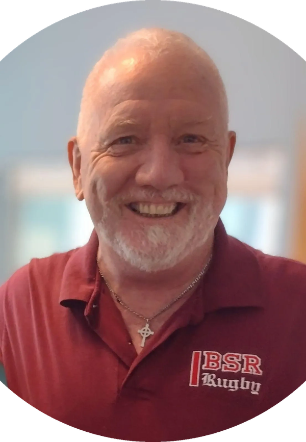

Mobile + telehealth OT & PT · Fredericksburg, Virginia
Therapy where your life actually happens.
Personalized occupational and physical therapy in your home, in the community, or by telehealth—grounded in evidence and centered on your whole life.
No referral is needed to start a conversation.
Find your oasis
of healing.
Meet your therapists
Experienced care from people who listen.
Your therapy relationship matters. We bring clinical depth, curiosity, and a steady human presence to every visit.
Owner · Occupational Therapist
Kerri Newman-Darrow, OTR/L, CHT, RYT-200
Kerri is a Certified Hand Therapist, occupational therapist, and yoga and meditation teacher. Her trauma-informed, whole-person approach supports physical recovery, emotional resilience, and a return to meaningful daily life.
She combines expertise in hand and upper-extremity rehabilitation with mindfulness, movement, and deep listening—creating care that feels both clinically grounded and genuinely personal.

Physical Therapist
Garry Fitzgibbons, PT
Garry brings more than 30 years of outpatient physical therapy experience to Kind Oasis. He works with joint-replacement recovery, neck and back pain, balance, strengthening, and a wide range of musculoskeletal concerns.
A United States Marine Corps veteran and lifelong athlete, Garry pairs practical clinical experience with a compassionate, reassuring style and individualized exercise and manual therapy.
Care comes to youHome, community, or telehealth
Whole-person careFunction, resilience, and well-being
Specialized expertiseHand therapy, neuro, balance, and more
Care with room to breathe
Clinical expertise. Human connection. Your goals.
Traditional clinics are not the right fit for everyone. Kind Oasis brings one-on-one therapy into the places that matter most, allowing us to understand your routines, challenges, and strengths in context.
We blend skilled rehabilitation with tools such as mindfulness, breathwork, yoga, therapeutic movement, and nature-based activity when they support your goals.
How we can help
Support for body, mind, and daily life.
01Hand & upper-extremity care
Custom orthoses, arthritis care, post-operative rehabilitation, fractures, nerve conditions, wounds, and persistent hand or arm pain.
02Mobility, balance & aging well
Falls prevention, strengthening, home safety, equipment recommendations, caregiver education, and support for safer daily routines.
03Neurologic rehabilitation
Practical, individualized care for Parkinson’s disease, stroke, dementia, weakness, coordination changes, and complex disability.
04Pain & orthopedic recovery
Movement, manual therapy, cupping, fascial techniques, kinesiotaping, and activity modification to help you return to meaningful life.
05Grief, stress & resilience
Occupational therapy for coping, emotional regulation, life transitions, routines, and reconnecting with meaningful activities.
06Therapeutic movement outdoors
Yoga, breathwork, walking, hiking, and paddling experiences adapted to your abilities, comfort, and goals.
Getting started
A simpler path to the right care.
- 1
Let’s talk
Call, text, or email for a complimentary screening.
- 2
We build your plan
We clarify your goals and determine the best setting for care.
- 3
Care comes to you
Receive focused, one-on-one support where it works best.
Insurance & visit options
Care with clear choices.
Kind Oasis is an in-network Medicare Part B provider. For other plans, we offer private-pay visits and can provide a superbill that you may submit for possible out-of-network reimbursement.
Coverage and reimbursement vary. We are happy to help you understand your options before scheduling.
Occupational therapy
OT starts with the parts of daily life that matter to you—and the barriers making them harder.
Read the guide →
Hand therapy
Learn what the CHT credential means and when specialized upper-extremity care may be useful.
Read the guide →
Daily life
Small patterns shape how a day works. OT helps rebuild them after illness, injury, or change.
Read the guide →
Grow with Kind Oasis
Practice therapy with more freedom and connection.
We are interested in meeting compassionate occupational and physical therapists who value autonomy, whole-person care, and meaningful work in the community.
Our independent-contractor opportunities offer flexible scheduling and the chance to build a caseload aligned with your strengths.
Start a confidential conversation
Ready when you are
Let’s find the right next step.
Tell us what is getting in the way of living the life you want.